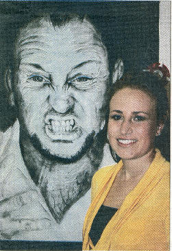
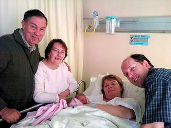
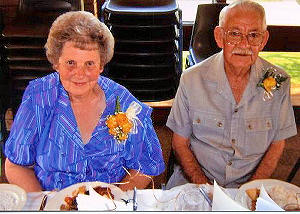
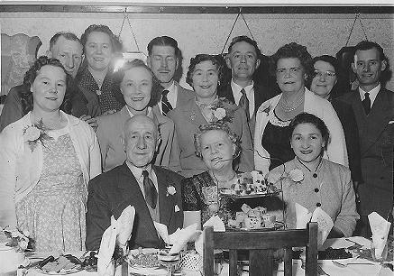
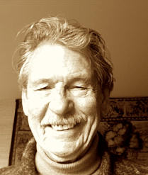
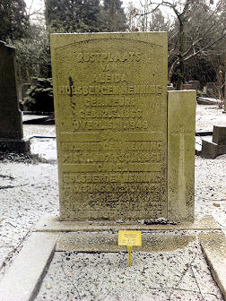
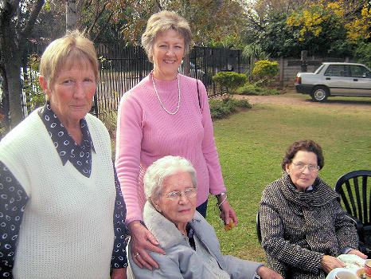
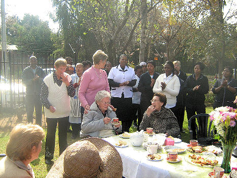

|
Indeks: |

Die volgende berig oor b6.c1.d3.e5.f3.g9.h1.i2. Mariska Henning *18-9-1991 het onlangs in Die Volksblad verskyn:
"Kuns het vir haar as disleksie-lyer die geleentheid gebied om 'n nuwe wêreld te verken, sê Mariska Henning, die Bloemskou se algehele wenner in die kunskompetisie vir hoërskole.
Mariska is weens leerprobleme in die St Martins-skool in Bloemfontein. Sy doen haar teoretiese kunsklasse by die Hoërskool Eunice en die prakties by mnr Gerrit Hattingh in die stad.
Dié matriekleeling het die kompetisie met 'n reuse houtskoolwerk van die sanger Steve Hofmeyr gewen, terwyl sy met 'n skets van Jesus wat gekruisig word die Jan Erasmus-Adéle Steyn-wisseltrofee vir die treffendste inskrywing gewen het.
Dit is egter as sy na haar werk van 'n jong nar wys dat sy die storie agter haar liefde vir kuns verklap. Die nar beeld 'n figuur uit wat sy disleksie wegsteek - iets waarvan sy self elke dag bewus is.
"Ek het self leerprobleme. My disleksie het vir my die geleentheid gebied om 'n nuwe wêreld te verken - die wêreld van die kuns."
Haar ma het haar van kleins af met kuns gestimuleer, sê sy.
"Ek was mal oor perde en het hulle begin teken. My ma-hulle het my later verbied om net perde te teken, maar ook ander emosies te verken," vertel Mariska.
"Ek het verworwe disleksie weens gebeure toe ek baie klein was. Ek het 'n gebrek aan skool- en leer vermoë. Kuns het my die selfvertroue gegee. Elke kunswerk is 'n emosionele deel van my."
Al is sy disleksies, skryf sy gedigte, vertel sy. Die gedigte is diep vasgelê in beelde.
"Elke kunswerk het 'n gedig by, al sou niemand dit ooit lees nie."
Met die Jesus-werk wou sy die emosie vasvang van haar as Christen en vir mense vertel wat die Here vir haar gedoen het. Steve Hofmeyr se "emosie in sy gesigsuitdrukking" in 'n tydskrif het haar aangespoor om dit met houtskool uit te beeld.
Mariska wil graag volgende jaar kuns studeer om 'n heeltydse kunstenaar te wees óf kinders deur middel van kuns te inspireer. Sy is die dogter van Dr Pieter Henning van Sedgefield en mev Riekie Henning van Bloemfontein. Haar suster, Yolandé, is 'n argitektuurstudent.


b7.c8.d8.e3.f5.g1. Stephanus Rudolf (Rudolf) Henning *17-9-1972 en sy vroutjie, Eldene (gebore Skinner) van Oak Glen, Bellville het op 7 Mei 'n kleinding ryker geword. Haar naam - Chanté Elizabeth. Rudolf het ook 'n dogtertjie, Runé uit 'n vorige huwelik, maar Chanté is Eldene se eerste kleinding. Rudolf dien natuurlik ook op die bestuur van die familiebond.


Ons het met leedwese verneem van die afsterwe van die volgende persone:
Eric Michael Naude *11-7-1928, eggenoot van b7.c2.d4.e6.f1.g1. Ellen Elizabeth Henning *28-10-1929 is op 16-4-2010 te Rosslyn, Pretoria oorlede. Eric het vir baie jare, tot en met sy aftrede, in die ou SA Weermag gedien. Hy en Ellen was getroue ondersteuners van die familiebond en het gereeld, alle byeenkomste wat in die omgewing van Pretoria gehou is, bygewoon.

Daar kan met reg gesê word dat die ou VOC instrumenteel was tot die totstandkoming van die land Suid-Afrika. Al die VOC rekords uit hierdie tyd (1652 tot 1795) is in die argiewe in Nederland bewaar. 'n Klompie jare gelede het die Nederlandse regering begin met die rekenarisering van hierdie argiewe. As gevolg hiervan kan mens nou makliker en meer inligting kry oor verskeie Hennings wat gedurende die agtiende eeu by die Kaap van Goeie Hoop aangekom het.
Ons het met verbasing agtergekom dat dit nie net die paar Henning's is wat ons in Hoofstuk 2 van die Henning Familiekroniek vermeld, wat in diens van die VOC was nie. Gedurende die 100 jaar, vanaf 1700 tot 1795 was daar nie minder as 90 Henning vir 'n tydlank in diens van die VOC - meeste van hulle van Duitse afkoms, maar daar is ook verskeie wat vermoedelik reeds as Nederlanders geklassifiseer kan word. Die oorgrootte meerderheid van hierdie 90 het diens in Batavia, Java en Ceylon gedoen, maar almal het verby die Kaap gevaar en daar aan wal gegaan. Hierdie 90 Hennings was in die volgende beroepe in diens:
| Beroep | Getal |
|---|---|
| Soldaat | 44 |
| Matroos | 23 |
| Bootgesel | 1 |
| Assistant | 1 |
| Jongen | 1 |
| Sersant | 1 |
| Skeepskorporaal | 1 |
| Sieketrooster | 1 |
| Huistimmerman | 1 |
| Konstabelsmaat | 1 |
| Korporaal | 2 |
| Kanonnier | 11 |
| Kwartiermeester | 1 |
| Kok | 1 |
Dit was maar redelik gevaarlik om in diens van die VOC te gewees het. 58 van die 90 is weens obskure redes uit diens gestel. Die 32 werknemers in die regterkantste kolom (hieronder) het darem heelhuids uit die stryd getree. Die vier man wat Vryburgers geword het, word almal in die Hoofstuk 2 van die Henning Familiekroniek vermeld. Mens weet natuurlik nie wat het geword van die twee outjies wat weggeloop het nie.
| Uit diens gestel, Obskure Redes | Getal |
|---|---|
| Oorlede in diens | 48 |
| Vermis | 5 |
| Weggeloop | 2 |
| Skip vergaan | 2 |
| Medies ongeskik | 1 |
| Totaal uit diens, obskure redes | 58 |
| Uit diens gestel, geldige redes | Getal |
| Gerepatrieer | 19 |
| Vryburger | 4 |
| Bly in diens | 9 |
| Totaal uit diens, geldige redes | 32 |
Dit het ook aan die lig gekom dat elf van hierdie Hennings, afgesien van die vier wat as Vryburgers by die Kaap agtergebly het, ook 'n tydlank - selfs langer as 'n jaar - by die Kaap vertoef het.
1. Christoffel Henning van Saxen, 'n soldaat vertoef enkele maande gedurende 1719 aan die Kaap
2. Johan George Hendrik Henning van Lunenburg het vanaf 1745 tot 1746 as soldaat aan die Kaap vertoef
3. Christiaan Henning van Rodenburg, 'n matroos, vertoef vanaf 1754 tot 1759 aan die Kaap
4. Gorg Henning van Metz, Frankryk 'n soldaat vertoef gedurende 1768/69 'n klompie maande aan die Kaap
5. Christiaan Henning van Antwel in Westfallen, 'n soldaat vertoef verskeie maande gedurende 1769/70 aan die Kaap
6. Johan Jurge Henning van Metz (Frankryk), 'n soldaat, vertoef enkele maande gedurende 1770 aan die Kaap
7. Willem Henning van Amsterdam, 'n hooploper (ongeoefende matroos), vertoef enkele maande gedurende1772 aan die Kaap
8. Hendrik Henning van Haarburg, 'n jong matroos, vertoef enkele maande gedurende 1773 aan die Kaap
9. Johannes Henning van Kermerhousen, 'n soldaat vertoef enkele maande gedurende 1773 aan die Kaap
10. Johan Hendrik Henning van Wesel, 'n soldaat vertoef gedurende 1786/87 enkele maande aan die Kaap
11. Christiaan Bernhard Henning van Zuiderhousen het vanaf 1786 tot 1788 as kanonnier aan die Kaap vertoef
Twee ander persone het ons aandag getrek. Barend Henning van die Graafskap Lippe het op 14-5-1758 as Bosschieter (kanonnier) in diens van die VOC getree en met die skip Welgelegen na Batavia vertrek. Hy kom op 9-3-1759 by Batavia aan, maar is op 3-11-1759 oorlede. Barend Henning kom soos ons ou stamvader van Lippstadt en het slegs 'n paar jaar voor Peter Henrich by die VOC aangesluit. Ons glo dat daar 'n verbintenis was. Hy was wel nie 'n broer van Peter Henrich nie, want ons beskik oor die name van al sy broers, maar hy kon 'n neef of 'n ander familielid gewees het.
'n Ander persoon wat ons aandag getrek het, is Gerrit Henning van Elbersveld. Hy tree in diens van die VOC op 21-11-1720 en vertrek met die skip Midloo as soldaat na die Kaap. Hy arriveer op 1-6-1721, maar word op 21-6-1721 medies ongeskik bevind. Dit is nie duidelik wat daarna van hom geword het nie en daar word vermoed dat hy aan die Kaap gesterf het of terug huis toe is.
Ons het ook verdere inligting ten opsigte van sommige van die persone wat ons in die Henning Familiekroniek vermeld, opgespoor.
In Hoofstuk 11 van die Henning Familiekroniek vermeld ons dat Georg Friedrich Henning (een van die Suid-Afrikaanse stamvaders) gedurende 1765 as soldaat by die Kaap aangekom het. Hy het met die skip Vredenhof gevaar. Ons kon nou vasstel dat Georg Friedrich op 15-11-1764 in diens van die VOC getree het en op dieselfde dag vanaf Amsterdam, Nederland met die skip Vredenhof na die Kaap gevaar het. Die skip arriveer op 20-2-1765 by die Kaap. Georg Friedrich dien as soldaat totdat hy op 17-5-1774 vrygestel word om as Vryburger te dien. Hy is 'n jaar later, op 22-10-1775 getroud met Catharina Cornelia van Blerk.In Hoofstuk 2 van die Henning Familiekroniek vermeld ons dat David Wilhelm Henning vanaf Königbergen, Duitsland op 14-10-1792 met Johanna Berendina Geertruida Maritz getrou het, maar dat hulle geen nasate gehad het nie.
Ons het nou vasgestel dat David Wilhelm Henning op 15-9-1785 as 'n matroos in diens van die VOC getree en met die skip Schoonderloo vanaf Delft na die Kaap van Goeie Hoop gevaar het. Die skip het op 7-2-1786 by die Kaap aangekom. Hy dien as matroos by die Kaap tot 27-9-1792 toe hy ontslag gekry het om as 'n Vryburger aan die Kaap te woon. Twee weke later is hy met Johanna Maritz getroud.Ons was bewus daarvan dat Claus Henning gedurende 1720 te Herborn, Duitsland gebore is en dat hy gedurende 1771 as 'n soldaat by die Kaap aangekom het. Hy het egter sy vrou en vier kinders in Duitsland agtergelaat.
Ons kon nou vasstel dat hy op 11-1-1771 as soldaat in diens van die VOC getree het. Hy reis met die skip Huis te Bijweg vanaf Amsterdam en arriveer op 8-7-1771 aan die Kaap. Hy tree op 12-1-1780 uit diens van die VOC om as Vryburger aan te bly. Hy kry werk as 'n plaaswerker. Geen spoor van hom kon verder gekry word nie en daar word vermoed dat hy teruggekeer het na sy vrou en kinders in Duitsland of dat hy aan die Kaap dood is, sonder dat hy weer getrou het.Die heel belangrikste ontdekking wat ons egter gedoen het, was dat ons ou stamvader Peter Henrich (Pieter Hendrik) Henning nie met die skip "Vrouwe Petronella" by die Kaap aangekom het nie maar met die skip "Jonkvrouwe Kornelia Jacoba". Sy vryburger sertifikaat (afskrif kan in al die geslagsregisterboeke en op die Henning laserskyf gesien word) dui wel baie duidelik aan dat hy met die skip Vrouwe Petronella gevaar het. As mens na die skeepslyste van die Vrouwe Petronella op ie VOC webblad kyk, kom Pieter Hendrik se naam glad nie daarop voor nie, terwyl sy naam baie duidelik verskyn op die lyste van die vaart van die Jonkvrouwe Kornelia Jacoba wat op 14 Julie 1765 uit Texel, Nederland vertrek en op 22 November 1765 by die Kaap aangekom het. Dit blyk dus of iemand gedurende 1783, toe Pieter Hendrik 'n Vryburger geword het, 'n fout gemaak het met die naam van die skip waarmee hy aangekom het.

Baie dankie aan almal wat oor die afgelope drie maande vir ons finansiële bydraes aangestuur het - veral diegene wat meer as R300.00 bygedra het (die name word hieronder verstrek), asook Erelede en Lewenslange lede, op wie daar geen verpligting rus om enige bydraes te lewer nie, maar wat tog hul deel doen. Lede wat jaarliks bydraes lewer, ontvang 'n afsonderlike uitnodiging om vir die betrokke jaar 'n bydrae te lewer. Ons meld dus graag vir ons Ere- en Lewenslange lede wat 'n behoefte voel om ook hulle deeltjie by te dra die bankbesonderhede van die Familiebond: ABSA Bank Villiersdorp (takno 334-612); naam van rekening -Henning Familiebond; Rekeningno 2890 610 423.
Gideon Henning van Strand, 'n Lewenslange lid en ook Voorsitter van die Familiebond het R500.00 bygedra.
Iemand het op 12 April 'n bedrag van R300.00 in die familiebond se rekening gedeponeer sonder om enige verwysing te verstrek. Dit het ook op 22 Mei by die Wonderparktak van ABSA gebeur toe 'n bedrag van R200.00 gedeponeer is.
Ons het 'n nuwe maandelikse debietorder bydraer gekry in die persoon van Jan Andries Henning van Leraatsfontein. Baie dankie Jan! Ook so vir ons ander maandelikse debietorderbydraers, Jan Hendrik Henning van Glenstantia, Pretoria en Henning Pieterse van Rietvalleipark, Pretoria.

Dit het onlangs aan die lig gekom dat die Oorlogsmuseum in Bloemfontein, in samewerking met die Erfenisstigting en Afrikanerkultuurorganisasies beplan om die gedenkteken vir die Bethulie konsentrasiekamp, wat, soos al die ander Konsentrasiekamp gedenktekens besig is om vervalle te raak, na die terrein van die Vrouemonument in Bloemfontein te verskuif en as 'n monument ter ere van al die vrouens en kinders wat gedurende die Anglo-Boere-oorlog in al die konsentrasiekampe gesterf het, op te rig. Die "South African Heritage Resources Agency (SAHRA)" is inderwaarheid verantwoordelik vir die instandhouding van hierdie monumente, maar doen niks aan die saak nie. Dit het duidelik geword dat daar nie op die regering staatgemaak kan word om sy verpligtinge na te kom nie en dat Afrikaners self na hul kultuurgoedere sal moet omsien 69 Henning vrouens en kinders het in die konsentrasiekampe gesterf, met 15 in die Bethulie kamp. Tydens 'n bestuursvergadering van die familiebond op 6 Junie 2010 is daar besluit dat hierdie monument ook hulde bring aan al die Henning vrouens en kinders wat daar gesterf het en dat die Henning Familiebond hierdie poging daadwerklik gaan probeer steun. Ons sal self na ons kultuurgoedere moet omsien.
Daar is besluit dat die Familiebond 'n bydrae van R2000.00 bewillig vir hierdie projek, maar dat ons eers ons lede gaan nooi om aanvullend tot ons poging by te dra. Lede stuur hulle bydraes aan die familiebond, met die spesifieke opdrag dat dit vir die Konsentrasiekamp monument is. Al sodanige bydraes wat ons teen 15 September 2010 ontvang het, sal dan in een globale bedrag aan die Oorlogsmuseum oorbetaal word, as bydrae van die Henning families van Suid-Afrika. U bydra kan direk in die Familiebond se bankrekening gedeponeer word - ABSA Bank Villiersdorp (tak 334 612), Rekening no 2890 610 423 met verwysing "Monument" en u lid nommer. (as u nie u lidnommer kan onthou nie, kyk op hierdie Nuusbrief se koevert, agter u naam) U kan ook u bydrae per pos aan ons stuur.
Hieronder volg 'n brief wat die Oorlogsmuseum aan kultuurorganisasies gestuur het
OORLOGSMUSEUM VAN DIE BOEREREPUBLIEKE/WAR MUSEUM OF THE BOER REPUBLICSPosbus/Post Box 34061, Faunasig, BLOEMFONTEIN, 9325
Tel 051-447 3447 Faks/fax 051-447 1322
jvanzyl@anglo-boer.co.za
MONUMENT TER HERDENKING VAN DIE ONTSTAAN VAN KONSENTRASIEKAMPE 110 JAAR GELEDE
In September 2010 sal dit 110 jaar gelede wees wat die eerste konsentrasiekampe in Suid-Afrika ontstaan het. Wie ken nie die hartseer wat dié gebeure uit die Anglo-Boereoorlog in die Suid-Afrikaanse geskiedenis gelaat het nie. Vroue en kinders het in die kampe die hoogste prys betaal wat nog ooit sovêr in die geskiedenis van Suid-Afrika ten opsigte van getalle betaal is.
Die museum ontvang op 'n weeklikse basis klagtes oor die agteruitgang van konsentrasiekamp kerkhowe. Hoewel dit onder die "South African Heritage Resources Agency (SAHRA)" resorteer en klagtes in die verband na hulle verwys word, het die museum 'n morele verpligting om iets aan die situasie te doen weens die gebrek aan optrede in die verband deur bogenoemde instansie. Die museum se erns met die situasie is in 2003 bewys met die hulp wat die museum verleen het aan dr Elizabeth van Heyningen om 'n inwonerlys (en sterftes) vir konsentrasiekampe saam te stel wat nou op die internet beskikbaar is.
Ten einde 'n oplossing te vind, het die museum besluit om op 23-24 September 2010 'n beraad op nasionale vlak te belê met alle Afrikaanse kultuurorganisasies asook staatsinstellings soos "SAHRA" insake die terreine. Reëlings vir die beraad vorder fluks en afgevaardigdes en genooide sprekers vanoor die hele Suid-Afrika word by die konferensie verwag. Die museum vertrou dat die byeenkoms die nodige oplossing sal bied vir die probleem.
Deel van die geleentheid is die onthulling van 'n monument ter gedagtenis aan die ontstaan van konsentrasiekampe 110 jaar gelede op die terrein van die Oorlogsmuseum van die Boererepublieke in Bloemfontein (Vrouemonument). Die monument, wat ook uit sandsteen sal bestaan, is ontwerp om by die res van die monumente op die museum se terrein aan te pas. Die ontwerp (monument) neem die vorm aan van 'n groot en klein sandsteenbankie, 'n vertikale voetstuk met 'n engelbeeldjie daarby asook 'n blombak met 'n doringboompie (simbolies van Totius se gedig oor die oorlog). In die ontwerp word sandsteenklip gebruik wat afkomstig is van die Bethulie konsentrasiekamp. Die klip is deur die vroue en kinders van die kamp uit die walle van die naby geleë spruit gebreek en is aangewend as grafbekleding vir die grafte van dierbares. Die museum het in sy versameling ook 'n marmer engelbeeld uit die kamp wat deel gaan vorm van die monument.
Die kamp is in die jare sewentigs verskuif na 'n nuwe terrein uit vrees dat die pas voltooide Gariepdam (Verwoerddam) die ou kerkhof sou oorstroom. Die grafbekleding is vandag, saam met twee kleiner monumente, al aanduiding van waar die oorspronklike terrein geleë was. In 2009 is daar met die drie Afrikaanse kerke (NG, APK en Gereformeerd) op Bethulie onderhandel om van die materiaal te bekom vir die monument. Bethulie was per slot van sake die kamp in die Vrystaat met die hoogste sterftesyfer per kapita en is deur generaal De Wet na verwys as die "Helkamp".
Die koste vir die monument beloop volgens die bourekenaar ongeveer R35 000.00. Die museum het reeds 'n bydrae van die Appelhof in Bloemfontein ontvang asook Oranje Meisieskool in Bloemfontein. Graag doen die museum 'n beroep op die ATKV om die museum met die projek finansieël behulpsaam te wees.
Die museum sal op 'n gepaste wyse (by die monument - in graniet) erkenning verleen vir instansies en persone wat betrokke was met die projek. Ons verneem graag van die ATKV in die verband.
Die regering gaan nie ons kultuurgoedere beskerm nie. Ons sal dit self moet doen. Ondersteun die Familiebond se poging om by te dra tot die oprigting van die Konsentrasiekamp monument. Stuur u bydrae voor 15 September 2010 aan ons.

Ons het die volgende interessante briewe uit die buiteland ontvang:
Uit Skotand, van Leonard Andrews: "I am the grandson of Charlotte Gertruida Henning, the 3rd child of Frederik Johannes Henning born 10 Oct 1847 who married his cousin Elizabeth Catharina Henning born 1855.
Charlotte Henning and her husband, David Allan had 9 children. The youngest daughter was a twin called Annie Winifred Allan, who is my mother.
We stay in Scotland at a place called Falkirk. Charlotte Gertrude Henning was born on 18 July 1888 and died on 10 Sept 1969 in Stenhousemuir Scotland. I remember her telling me about life on the farm at Zastron during her early years and I am very proud to be her descendant, and I certainly did not know about the Henning coat-of-arms, so I am really proud to be a part of the Henning clan albeit from a distance.
Annie Winifred Allan born 26th Oct 1923 married Leonard Andrews 27th July 1946 in Larbert Scotland, had twin sons born 11th February 1948 in Falkirk Scotland. Allan, unmarried, died 23th Nov 1996, and myself, Leonard married Moira Helena Connolly Duffy on 3rd Oct 1970 in Grangemouth, Scotland.

My grandfather David Allan served in the South African Police between 1901 and 1911. I think he was based in the Rouxville and Zastron area. He also served in the 1st World War. On returning to Scotland he settled in Stenhousemuir near Falkirk. I would love to hear from anyone who could tell me how to access anything about his police service in Africa.
That is all the information I have at present, but will try and send you some photographs at a later date. Is there anything I can acquire with the Henning coat-of-arms on it. I know it will be impossible to get anything in Scotland, but would like to have something to have with the crest on it. Any info regarding purchasing something would be appreciated."
Len Andrews onthou goed hoe sy ouma se suster, Elizabeth Catharina Scholtz (gebore Henning, b1.c6.d8.e6.), wat gedurende 1957 spesiaal vir haar suster en swaer se 50ste huweliksherdenking Skotland toe gegaan het, vir hom en sy tweeling broer, 'n "tiekie" gegee het om vir haar 'n pakkie Du Maurier sigarette te gaan koop het.
50ste huweliksherdenking van b1.c6.c8.e3 Charlotte Gertruida Henning *18-7-1888 en haar man David Allan. Charlotte se suster, Elizabeth Catharina *1896 (e6) wat spesiaal Skotland toe gegaan het vir die geleentheid, staan derde van regs, agter. David Allan was 'n Britse soldaat wat na die ABO as 'n polisieman agtergebly en in die Rouxville/Zastron distrikte gewerk het. Daar het hy die Boere-dogter, Charlotte Henning ontmoet.

Uit Texas, VSA van Tyler Henning. "Hello my name is Tyler Henning and I am from Texas in the USA. I just thought I would say hello and let other hennings know that were here too" Uit Chamaliéres, Frankryk van Jean Henning. "I am one of yours. I live in Chamalières France. Here is all I know about my family. I am a retired university lecturer, 80 years old! How many Hennings in the world? Very few in France. A salute to all my cousins. Jean Henning.
Die Fransman Jean Henning wat in Chamaliè woon, het 'n basiese geslagsregister van sy familie vir ons gestuur.


Ons het jare gelede hulp aan Guido Zuuring van Nederland verleen met sy familie se geslagsregister. Onlangs ontvang ons weer 'n E-Pos van hom waar in hy vertel dat hy deur die begraafplaas in Nijmegen, Nederland gestap het en op die graf van 'n Henning gesin afgekom het. Twee van die name en datums is herkenbaar, nl. Aleida Hulsbergen Henning, (gebore Meurs) *12-3-1866 en oorlede 5-11-1948, asook Hulsbergen Henning *15-1-1897 en oorlede 30-1-1951. Die derde persoon wat begrawe is se besonderhede is nie op die foto leesbaar nie.
Guido het navraag gedoen of dit dalk Hennings is wat by ons stam inpas. Dit was egter gou duidelik dat dit nie Suid-Afrikaanse Hennings is nie, maar dat hulle by die Nederlandse stam, wat ook op die Henning webwerf op Internet vertoon word, inpas. Ons is egter baie dank aan Guido Zuuring verskuldig vir sy opmerksaamheid.

Na ons wete, is tant Driekie Alberts (b9.c1.d4.e6.f1. Fredrika Wilhelmina [gebore Henning] *30-6-1913) tans die oudste Henning in Suid-Afrika. Sy woon in die Oude Rus sorgeenheid in Queenswood, Pretoria.
Op haar verjaardag is daar 'n partytjie vir haar gehou, wat deur haar suster, Maria Helena (getroud Pieterse) *17-4-1925, twee van haar vier dogters, Driekie en Amanda en ander familielede en vriende bygewoon is. Ongelukkig kon haar ander oorlewende suster, Martha Cornelia Jacoba (getroud Pearson) en haar ander twee dogters, nie bywoon nie.
|  |  |
Tant Driekie kom uit 'n familie waar daar net dogters was. Sy en haar man, wyle Francois Jacobus Alberts het ook net dogters gehad. Ten spyte hiervan is sy baie trots op haar Henning voorsate en praat dikwels van die verskillende Henning feeste wat sy bygewoon het, onder andere die inwyding van die Henning museum te Aliwal-Noord gedurende April 1992 en in besonder die wonderlike treinrit na Mopkop wat deel van die feesvieringe was.
Tydens die partytjie het die personeel van die Versorgingseenheid tant Driekie in vier tale toegesing.
Van Familiebond kant wil ons graag vir tant Driekie sê: "Baie geluk tant Driekie met hierdie besondere prestasie. Ons hoop dat die jare wat nog vir jou beskore mag wees, vreugdevol, sonder pyn en lyding en geseënd sal wees"